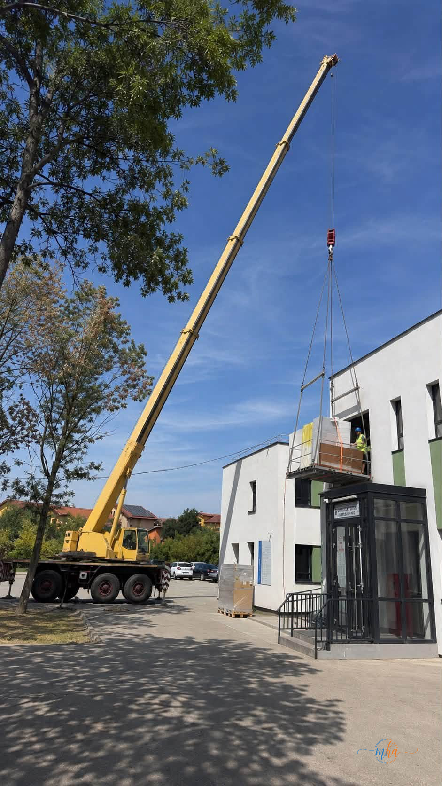
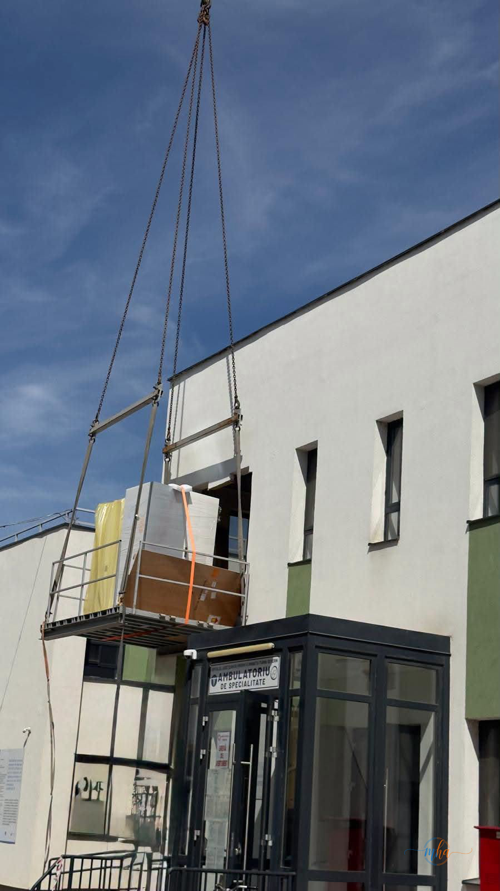

Un nou aparat de rezonanță magnetică, de înaltă performanță, a ajuns la Spitalul Județean de Urgență Drobeta Turnu Severin. Echipamentul, în valoare de 7.658.000 de lei, fără TVA, este destinat creșterii capacității de diagnosticare și îmbunătățirii serviciilor medicale oferite pacienților din Mehedinți.
Anunțul a fost făcut de Aladin Georgescu, președintele Consiliului Județean Mehedinți, care a transmis că noul RMN reprezintă o investiție importantă pentru sistemul medical județean.
Finanțare prin Ministerul Sănătății și Consiliul Județean
„Astăzi, Spitalul Județean de Urgență Drobeta Turnu Severin a primit noul aparat de rezonanță magnetică (RMN), o investiție importantă pentru creșterea calității serviciilor medicale oferite pacienților din Mehedinți", a transmis Aladin Georgescu.
Potrivit președintelui CJ Mehedinți, aparatul este achiziționat cu fonduri de la Ministerul Sănătății, la care se adaugă contribuția Consiliului Județean Mehedinți, asigurată printr-un amendament la Legea Bugetului de Stat, depus și susținut în Parlament de senatorii PSD Mehedinți Liviu Mazilu și Oana Buzatu și deputatul PSD Mehedinți Alin Chirilă.

Aparatul va fi montat în Ambulatoriul de Specialitate
Noul RMN va fi instalat la etajul I al Ambulatoriului de Specialitate, unitatea medicală nouă construită de Consiliul Județean Mehedinți și dată în folosință în anul 2023.
Echipamentul este dotat cu tehnologii moderne, concepute pentru a crește confortul pacienților și eficiența investigațiilor. Aparatul are o apertură de 70 de centimetri, ceea ce oferă mai mult spațiu în timpul examinării și facilitează efectuarea investigațiilor inclusiv în cazul pacienților claustrofobi, supraponderali sau cu mobilitate redusă.
Un alt avantaj îl reprezintă tehnologiile bazate pe inteligență artificială, care permit obținerea unor imagini de înaltă calitate și precizie diagnostică, reducând totodată timpul de scanare. Astfel, pacienții vor petrece mai puțin timp în aparat, iar capacitatea unității medicale de a efectua investigații RMN va putea crește.

Sistem digital integrat pentru medici și pacienți
Noul echipament beneficiază și de soluții digitale moderne. Imaginile și rezultatele investigațiilor vor putea fi vizualizate la nivelul întregului spital, iar sistemul permite utilizarea teleradiologiei și integrarea cu sisteme externe de inteligență artificială.
Medicii vor putea primi notificări pe telefon atunci când imaginile sunt disponibile în PACS, iar documentele și datele pacienților vor fi digitalizate. De asemenea, consimțământul informat va putea fi completat cu ajutorul tabletelor, iar pacienții vor avea la dispoziție un portal prin care își vor putea accesa imaginile și rezultatele direct de pe telefon.
O nouă etapă în modernizarea spitalului
Președintele Consiliului Județean Mehedinți subliniază că investiția face parte din procesul de modernizare a Spitalului Județean și de dezvoltare a infrastructurii medicale din județ.
„Pentru că în echipă suntem mai puternici și putem face mai mult bine județului Mehedinți", a transmis Aladin Georgescu.
Acesta a precizat că investițiile în infrastructură și echipamente medicale trebuie să continue, pentru ca pacienții din județ să poată beneficia de servicii medicale moderne, iar medicii să aibă la dispoziție aparatură performantă.
Noul RMN reprezintă, astfel, o nouă etapă în modernizarea Spitalului Județean de Urgență Drobeta Turnu Severin și în dezvoltarea serviciilor medicale destinate mehedințenilor.